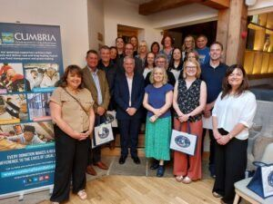
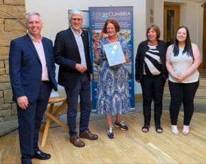

WCF Executive team walk the coast to coast for Cumbria Community Foundation
Our Executive Chair Jo Ritzema,
Chief Executive Phil Murray, Head of Finance Pam Murray and Karen Kelso, Head
of People and Culture all participated in Cumbria Community Foundation’s
Virtual Coast to Coast Challenge to raise awareness of and money for the
foundation in its 25th anniversary year. All the money raised will
be distributed through grant making to a wide range of charities and community
groups across the county.

Along with other teams from businesses across Cumbria, the WCF Warriors each walked more than 171 miles over the course of the 6-week challenge. Phil was the first individual to complete the challenge in less than 3 weeks and the WCF Warriors were the first team to get all participants over the line. WCF also raised the most money – almost £2,400 which was matched by WCF as part of its own charitable commitment to its employees. In total the challenge raised more than £12,500. The 130 members of the 18 teams walked the equivalent of the distance from Cumbria to the South Pole and back, clocking up almost 20,000 miles in just six weeks.
Executive Chair Jo Ritzema said: “As long-standing supporters of Cumbria Community Foundation, we were delighted to support the charity in their silver anniversary year by doing something a bit different. Our senior leadership team already had its own group on Strava, so taking part in the Virtual Coast to Coast Challenge was the perfect fit for us. We have all thoroughly enjoyed taking part in the Virtual Coast to Coast Challenge and have benefitted from both the physical and mental effort. By doing it as a team, we have been spurred on by the efforts of others, particularly on dull and rainy days, and there is no doubt there has been a healthy level of competition to top the leaderboard. Our colleagues at WCF have encouraged us with their kind words and donations and we are very grateful for the generosity of everyone who sponsored us. We are also grateful that WCF has match funded what we raised with its own contribution.”

Caroline Adams, Development Manager for Cumbria Community Foundation, said: “We were absolutely delighted with the way so many people rose to the challenge and took part to support the work of the Foundation. We wanted to do something special to mark our 25th anniversary and this challenge has certainly given us many memorable moments, as well as raising very valuable funds for communities in need across the county.”
A celebration event was held at North Lakes Hotel in Penrith to bring participants together to thank them and share stories of their efforts to complete the challenge.
Press Links
< Previous Article
WCF Pet & Equestrian support local animal charities